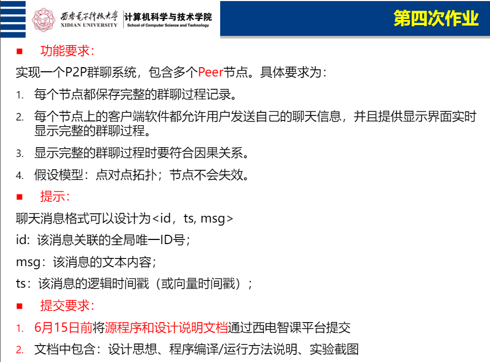
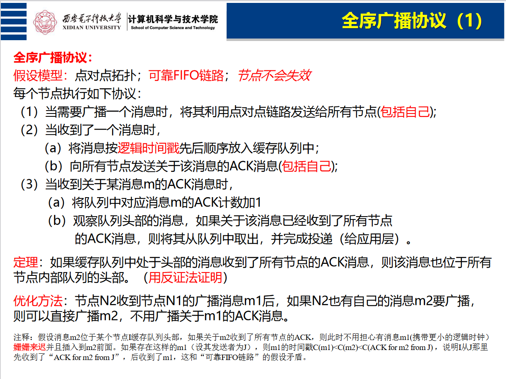
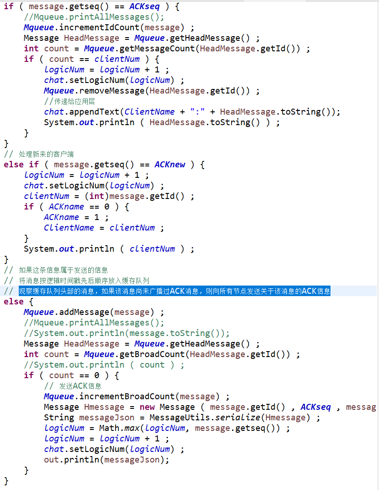
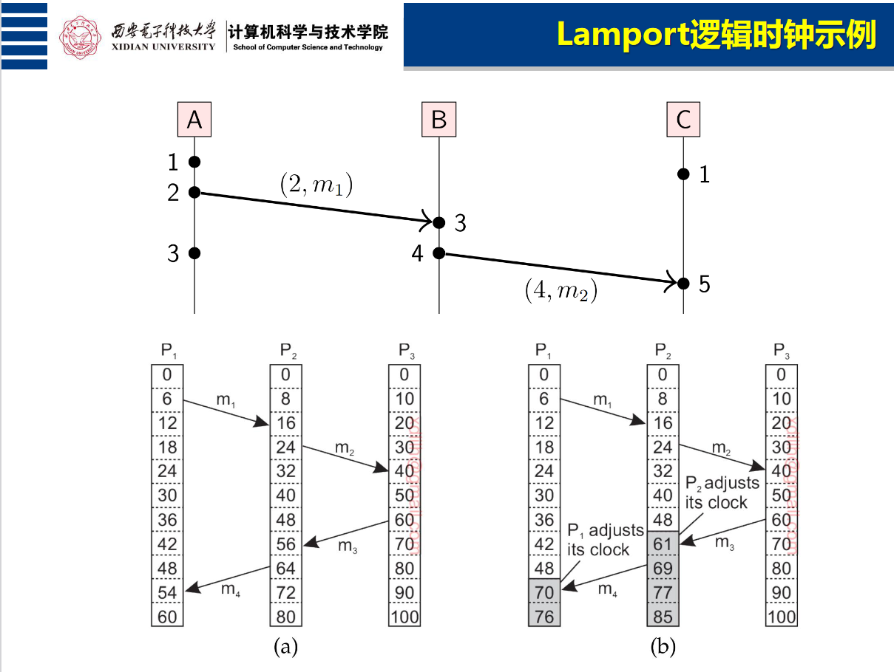
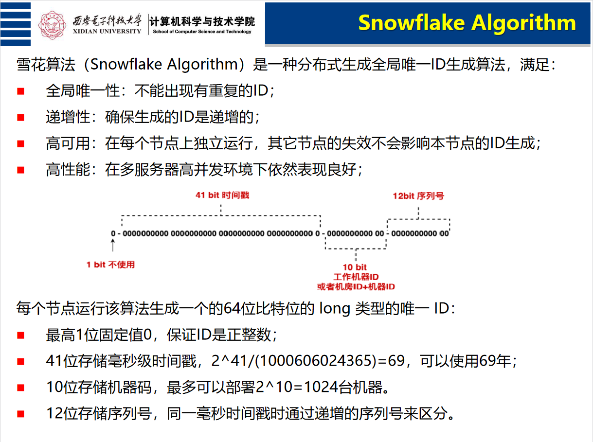
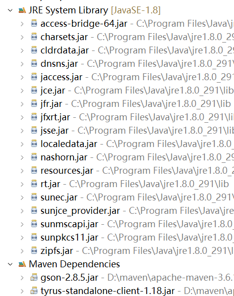
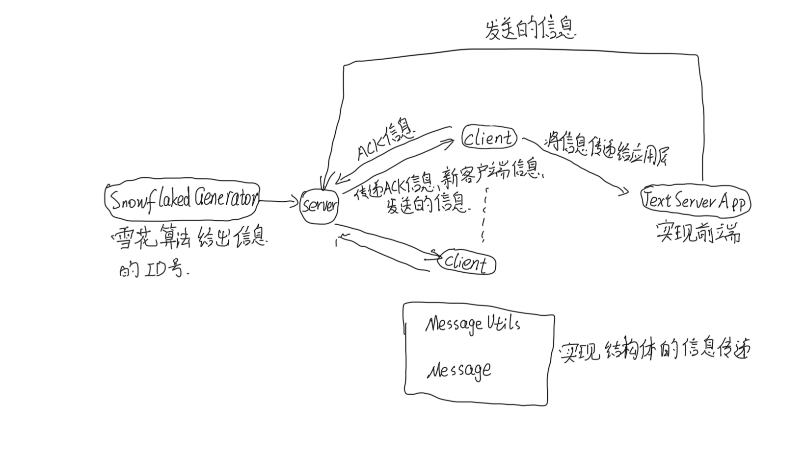
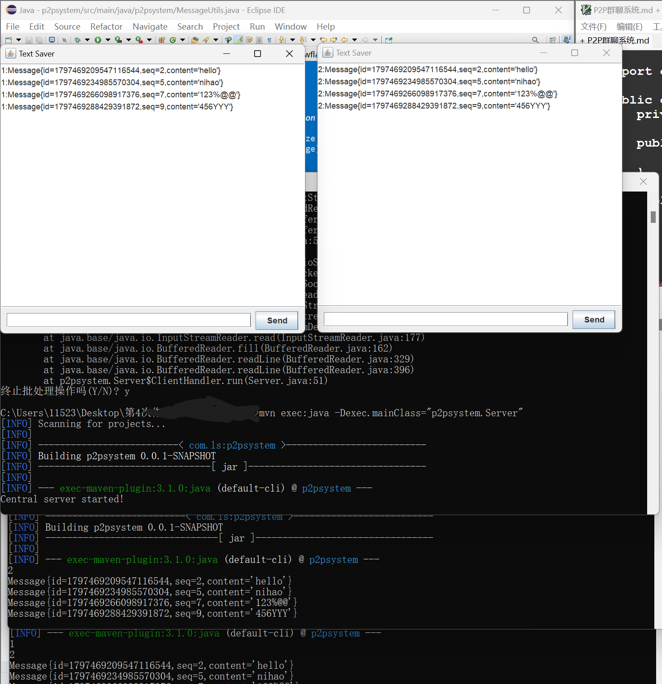

分布式作业
# 问题重述
# 实验原理# 全序广播协议
采用一个服务端，多个客户端的方法，当客户端收到服务端传来的信息时，判断该信息属于 ACK 信息、新加入客户端信息还是 message 消息。
如果这条信息是属于 ACK 信息，将对应消息 m 的 ACK+1, 观察队列头部的消息，如果关于该消息已经收到了所有节点的 ACK 消息，则将其从队列中取出，并完成投递。
如果这条信息属于发送的信息，将消息按逻辑时间戳先后顺序放入缓存队列，观察缓存队列头部的消息，如果该消息尚未广播过 ACK 消息，则向所有节点发送关于该消息的 ACK 信息.
具体实现如下图代码所示

# 因果关系
当客户端收到一条消息就将自己的时间戳与该信息的时间戳相比较，更新为更大的值实现因果关系的同一。
具体实现如下
# 传递消息采用 socket 传递消息
# 雪花算法
为 Server 提供信息的 ID 号
# 实验环境# 软件版本Windows11

# pom 环境1 2 3 4 5 6 7 8 9 10 11 12 13 14 15 16 17 18 19 20 21 22 23 24 25 <project xmlns="http://maven.apache.org/POM/4.0.0" xmlns:xsi="http://www.w3.org/2001/XMLSchema-instance" xsi:schemaLocation="http://maven.apache.org/POM/4.0.0 https://maven.apache.org/xsd/maven-4.0.0.xsd"> <modelVersion>4.0.0</modelVersion> <groupId>com.ls</groupId> <artifactId>p2psystem</artifactId> <version>0.0.1-SNAPSHOT</version> <dependencies> <dependency> <groupId>com.google.code.gson</groupId> <artifactId>gson</artifactId> <version>2.8.5</version> </dependency> <dependency> <groupId>org.glassfish.tyrus.bundles</groupId> <artifactId>tyrus-standalone-client</artifactId> <version>1.18</version> </dependency> </dependencies> </project>
# 设计思路# 构架图
# 各个代码的用途# Client接受服务端的信息，处理终端和前端 UI 的信息，将最终信息传递给 TextSaverApp 进行展示。
# Server不断接收来自 PORT 端口的信息，并将信息传给所有的 Client 节点，值得主义的是由于 messageID 是唯一的，所以需要进行锁操作，我采用了 Java 中的 synchronized 函数对此变量进行锁操作。
# TextSaverAPP对文本框接收到的信息进行处理并传递给 Server 服务器；对从 Client 收到的信息进行展示。
# MessageUtils\Message对信息进行定义并执行序列化和反序列化操作
# MessageQueue对信息进行存储、删除、记录次数操作，并利用优先队列对信息进行排序。
# SnowflakeIdGenerator生成信息的 ID 号
# Commandsmvn clean
mvn exec:java -Dexec.mainClass="p2psystem.Server"
mvn exec:java -Dexec.mainClass="p2psystem.Client"
# JAVA 程序# Client.java1 2 3 4 5 6 7 8 9 10 11 12 13 14 15 16 17 18 19 20 21 22 23 24 25 26 27 28 29 30 31 32 33 34 35 36 37 38 39 40 41 42 43 44 45 46 47 48 49 50 51 52 53 54 55 56 57 58 59 60 61 62 63 64 65 66 67 68 69 70 71 72 73 74 75 76 77 78 79 80 81 82 83 84 85 86 87 88 89 90 91 92 93 94 95 96 97 98 99 100 101 102 103 104 package p2psystem;import java.io.* ;import java.net.Socket;import com.google.gson.Gson; public class Client { private static final String SEVERADDRESS = "127.0.0.1" ; private static final int PORT = 8189 ; private static int clientNum = 1 ; private static int logicNum = 1 ; private static final Gson gson = new Gson () ; private static final int ACKseq = 1145141919 ; private static final int ACKnew = 1919810 ; private static final MessageQueue Mqueue = new MessageQueue ( ) ; private static TextSaverApp chat = new TextSaverApp ("chatgroup" ) ; private static int ClientName ; private static int ACKname = 0 ; public static void main ( String [] args ) throws Exception { Socket socket = new Socket ( SEVERADDRESS , PORT ) ; BufferedReader in = new BufferedReader ( new InputStreamReader ( socket.getInputStream() ) ) ; PrintWriter out = new PrintWriter ( socket.getOutputStream() , true ) ; BufferedReader consoleInput = new BufferedReader ( new InputStreamReader ( System.in ) ) ; new Thread ( ( ) -> { try { String serverMessageJson ; while ( ( serverMessageJson = in.readLine() ) != null ) { Message message = MessageUtils.deserialize(serverMessageJson) ; if ( message.getseq() == ACKseq ) { Mqueue.incrementIdCount(message) ; Message HeadMessage = Mqueue.getHeadMessage() ; int count = Mqueue.getMessageCount(HeadMessage.getId()) ; if ( count == clientNum ) { logicNum = logicNum + 1 ; chat.setLogicNum(logicNum) ; Mqueue.removeMessage(HeadMessage.getId()) ; chat.appendText(ClientName + ":" + HeadMessage.toString()); System.out.println ( HeadMessage.toString() ) ; } } else if ( message.getseq() == ACKnew ) { logicNum = logicNum + 1 ; chat.setLogicNum(logicNum) ; clientNum = (int )message.getId() ; if ( ACKname == 0 ) { ACKname = 1 ; ClientName = clientNum ; } System.out.println ( clientNum ) ; } else { Mqueue.addMessage(message) ; Message HeadMessage = Mqueue.getHeadMessage() ; int count = Mqueue.getBroadCount(HeadMessage.getId()) ; if ( count == 0 ) { Mqueue.incrementBroadCount(message) ; Message Hmessage = new Message ( message.getId() , ACKseq , message.getContent() ) ; String messageJson = MessageUtils.serialize(Hmessage) ; logicNum = Math.max(logicNum, message.getseq()) ; logicNum = logicNum + 1 ; chat.setLogicNum(logicNum) ; out.println(messageJson); } } } } catch ( IOException e ) { e.printStackTrace() ; } }).start ( ) ; Message infoM = new Message ( 0 , ACKnew , "Hello" ) ; String messageJso = MessageUtils.serialize(infoM) ; out.println ( messageJso ) ; String userInput ; while ( (userInput = consoleInput.readLine()) != null ) { Message message = new Message ( 0 , logicNum , userInput ) ; String messageJson = MessageUtils.serialize(message) ; logicNum = logicNum + 1 ; chat.setLogicNum(logicNum) ; out.println(messageJson); } } }
# Server.java1 2 3 4 5 6 7 8 9 10 11 12 13 14 15 16 17 18 19 20 21 22 23 24 25 26 27 28 29 30 31 32 33 34 35 36 37 38 39 40 41 42 43 44 45 46 47 48 49 50 51 52 53 54 55 56 57 58 59 60 61 62 63 64 65 66 67 68 69 70 71 72 73 74 75 76 77 78 79 80 81 82 83 package p2psystem;import java.io.* ; import java.net.* ; import java.util.* ;import java.util.concurrent.ConcurrentHashMap;import com.google.gson.Gson; public class Server { private static final int PORT = 8189 ; private static int messageID = 0 ; private static Map<Integer,PrintWriter> clientWriters = new ConcurrentHashMap <>() ; private static final Gson gson = new Gson () ; private static final SnowflakeIdGenerator idGenerator = new SnowflakeIdGenerator ( 1 , 1 ) ; private static final int ACKseq = 1145141919 ; private static final int ACKnew = 1919810 ; private static int clientNum = 0 ; public static void main ( String[] args ) { System.out.println ( "Central server started!" ) ; try ( ServerSocket serverSocket = new ServerSocket ( PORT ) ) { int count = 0 ; while ( true ) { new ClientHandler ( serverSocket.accept() ).start() ; } } catch ( IOException e ) { e.printStackTrace(); } } private static class ClientHandler extends Thread { private Socket socket ; private int clientID ; private BufferedReader in ; private PrintWriter out ; public ClientHandler ( Socket socket ) { this .socket = socket ; } @Override public void run ( ) { try { BufferedReader in = new BufferedReader ( new InputStreamReader ( socket.getInputStream() ) ) ; PrintWriter out = new PrintWriter ( socket.getOutputStream() , true ) ; clientID = socket.getPort() ; clientWriters.put(clientID, out) ; String messageJson ; while ( (messageJson = in.readLine()) != null ) { synchronized ( Server.class ) { Message message = MessageUtils.deserialize(messageJson); if ( message.getId() == 0 ) message.setId ( idGenerator.nextId() ) ; if ( message.getseq() == ACKnew ) { message.setId((long )clientNum+(long )1 ); clientNum = clientNum + 1 ; } String broadcastMessage = MessageUtils.serialize(message) ; for ( PrintWriter writer : clientWriters.values() ) { writer.println ( broadcastMessage ) ; } } } } catch ( IOException e ) { e.printStackTrace(); } finally { if ( out != null ) { clientWriters.remove(clientID) ; } try { socket.close(); } catch ( IOException e ) { e.printStackTrace(); } } } } }
# SnowflakeldGenerator.java1 2 3 4 5 6 7 8 9 10 11 12 13 14 15 16 17 18 19 20 21 22 23 24 25 26 27 28 29 30 31 32 33 34 35 36 37 38 39 40 41 42 43 44 45 46 47 48 49 50 51 52 53 54 55 56 57 58 59 60 61 62 63 64 65 66 67 68 69 70 package p2psystem;public class SnowflakeIdGenerator { private final long workerId; private final long datacenterId; private final long twepoch = 1288834974657L ; private final long workerIdBits = 5L ; private final long datacenterIdBits = 5L ; private final long maxWorkerId = -1L ^ (-1L << workerIdBits); private final long maxDatacenterId = -1L ^ (-1L << datacenterIdBits); private final long sequenceBits = 12L ; private final long workerIdShift = sequenceBits; private final long datacenterIdShift = sequenceBits + workerIdBits; private final long timestampLeftShift = sequenceBits + workerIdBits + datacenterIdBits; private final long sequenceMask = -1L ^ (-1L << sequenceBits); private long lastTimestamp = -1L ; private long sequence = 0L ; public SnowflakeIdGenerator (long workerId, long datacenterId) { if (workerId > maxWorkerId || workerId < 0 ) { throw new IllegalArgumentException (String.format("worker Id can't be greater than %d or less than 0" , maxWorkerId)); } if (datacenterId > maxDatacenterId || datacenterId < 0 ) { throw new IllegalArgumentException (String.format("datacenter Id can't be greater than %d or less than 0" , maxDatacenterId)); } this .workerId = workerId; this .datacenterId = datacenterId; } public synchronized long nextId () { long timestamp = timeGen(); if (timestamp < lastTimestamp) { throw new RuntimeException (String.format("Clock moved backwards. Refusing to generate id for %d milliseconds" , lastTimestamp - timestamp)); } if (lastTimestamp == timestamp) { sequence = (sequence + 1 ) & sequenceMask; if (sequence == 0 ) { timestamp = tilNextMillis(lastTimestamp); } } else { sequence = 0L ; } lastTimestamp = timestamp; return ((timestamp - twepoch) << timestampLeftShift) | (datacenterId << datacenterIdShift) | (workerId << workerIdShift) | sequence; } protected long tilNextMillis (long lastTimestamp) { long timestamp = timeGen(); while (timestamp <= lastTimestamp) { timestamp = timeGen(); } return timestamp; } protected long timeGen () { return System.currentTimeMillis(); } }
# TextSaverApp1 2 3 4 5 6 7 8 9 10 11 12 13 14 15 16 17 18 19 20 21 22 23 24 25 26 27 28 29 30 31 32 33 34 35 36 37 38 39 40 41 42 43 44 45 46 47 48 49 50 51 52 53 54 55 56 57 58 59 60 61 62 63 64 65 66 67 68 69 70 71 72 73 74 75 76 77 78 79 80 81 82 83 84 85 86 87 88 89 90 91 92 93 94 95 96 97 98 99 100 101 102 103 104 105 106 107 108 109 110 111 112 113 114 115 116 117 118 119 120 121 122 123 124 125 126 127 128 129 130 131 132 133 134 135 136 137 138 package p2psystem;import javax.swing.*;import java.awt.*;import java.awt.event.ActionEvent;import java.awt.event.ActionListener;import java.io.BufferedReader;import java.io.BufferedWriter;import java.io.FileWriter;import java.io.IOException;import java.io.InputStreamReader;import java.io.PrintWriter;import java.net.Socket;import java.net.UnknownHostException;public class TextSaverApp { private JFrame frame; private JTextArea textArea; private JTextField textField; private JButton sendButton; private BufferedWriter writer; private static final String SEVERADDRESS = "127.0.0.1" ; private static final int PORT = 8189 ; private static int logicNum = 1 ; Socket socket ; BufferedReader in ; PrintWriter out ; public void setLogicNum ( int logicNum ) { this .logicNum = logicNum ; } public TextSaverApp () { setupUI(); setupWriter("output.txt" ); try { socket = new Socket ( SEVERADDRESS , PORT ) ; in = new BufferedReader ( new InputStreamReader ( socket.getInputStream() ) ) ; out = new PrintWriter ( socket.getOutputStream() , true ) ; } catch ( IOException e ) { e.getStackTrace() ; } } public TextSaverApp (String filePath) { setupUI(); setupWriter(filePath); try { socket = new Socket ( SEVERADDRESS , PORT ) ; in = new BufferedReader ( new InputStreamReader ( socket.getInputStream() ) ) ; out = new PrintWriter ( socket.getOutputStream() , true ) ; } catch ( IOException e ) { e.getStackTrace() ; } } private void setupUI () { frame = new JFrame ("Text Saver" ); textArea = new JTextArea (20 , 50 ); textField = new JTextField (40 ); sendButton = new JButton ("Send" ); textArea.setEditable(false ); JPanel panel = new JPanel (); panel.setLayout(new BorderLayout ()); panel.add(new JScrollPane (textArea), BorderLayout.CENTER); JPanel inputPanel = new JPanel (); inputPanel.add(textField); inputPanel.add(sendButton); frame.getContentPane().add(panel, BorderLayout.CENTER); frame.getContentPane().add(inputPanel, BorderLayout.SOUTH); sendButton.addActionListener(new ActionListener () { @Override public void actionPerformed (ActionEvent e) { sendText(); } }); textField.addActionListener(new ActionListener () { @Override public void actionPerformed (ActionEvent e) { sendText(); } }); frame.pack(); frame.setDefaultCloseOperation(JFrame.EXIT_ON_CLOSE); frame.setVisible(true ); } private void setupWriter (String filePath) { try { writer = new BufferedWriter (new FileWriter (filePath, true )); } catch (IOException e) { e.printStackTrace(); } } private void sendText () { String text = textField.getText(); if (!text.isEmpty()) { Message message = new Message ( 0 , logicNum , text ) ; String messageJson = MessageUtils.serialize(message) ; logicNum = logicNum + 1 ; out.println(messageJson); textField.setText("" ); } } public void appendText (String text) { if (!text.isEmpty()) { textArea.append(text + "\n" ); try { writer.write(text); writer.newLine(); writer.flush(); } catch (IOException e) { e.printStackTrace(); } } } }
# MessageQueue1 2 3 4 5 6 7 8 9 10 11 12 13 14 15 16 17 18 19 20 21 22 23 24 25 26 27 28 29 30 31 32 33 34 35 36 37 38 39 40 41 42 43 44 45 46 47 48 49 50 51 52 53 54 55 56 57 58 59 60 61 62 63 64 65 66 67 68 69 70 71 72 73 74 75 package p2psystem;import java.util.*;public class MessageQueue { private PriorityQueue<Message> messageQueue; private Map<Long, Integer> idCounts; private Map<Long, Integer> broadCounts; public MessageQueue () { messageQueue = new PriorityQueue <>(Comparator.comparingLong(Message::getseq)); idCounts = new HashMap <>(); broadCounts = new HashMap <>() ; } public void addMessage (Message message) { messageQueue.offer(message); } public void incrementBroadCount ( Message message ) { broadCounts.put(message.getId(), 1 ) ; } public int getBroadCount ( long id ) { return broadCounts.getOrDefault(id, 0 ); } public void incrementIdCount ( Message message ) { idCounts.put(message.getId(), idCounts.getOrDefault(message.getId(), 0 ) + 1 ); } public void removeMessage (long id) { PriorityQueue<Message> newQueue = new PriorityQueue <>(Comparator.comparingLong(Message::getseq)); while (!messageQueue.isEmpty()) { Message message = messageQueue.poll(); if (message.getId() != id) { newQueue.offer(message); } else { idCounts.put(id, 0 ); } } messageQueue = newQueue; } public Message getHeadMessage ( ) { return messageQueue.peek() ; } public List<Message> getAllMessages () { return new ArrayList <>(messageQueue); } public int getMessageCount (long id) { return idCounts.getOrDefault(id, 0 ); } public void printAllMessages () { System.out.println("All Messages in the Queue:" ); for (Message message : messageQueue) { System.out.println(message.toString()); } } }
# Message1 2 3 4 5 6 7 8 9 10 11 12 13 14 15 16 17 18 19 20 21 22 23 24 25 26 27 28 29 30 31 32 33 package p2psystem;import java.io.Serializable;public class Message implements Serializable { private static final long serialVersionUID = 1L ; private long id ; private String content ; private int seq ; public Message ( long id , int seq , String content ) { this .id = id ; this .seq = seq ; this .content = content ; } public long getId ( ) { return id ; } public void setId ( long id ) { this .id = id ; } public int getseq ( ) { return seq ; } public void setseq ( int seq ) { this .seq = seq ; } public String getContent ( ) { return content ; } public void setContent ( String content ) { this .content = content ; } public String toString ( ) { return "Message{" + "id=" +id+ ",seq=" +seq+ ",content='" +content+'\'' + '}' ; } }
# MessageUtils1 2 3 4 5 6 7 8 9 10 11 12 13 14 15 16 package p2psystem;import com.google.gson.Gson;public class MessageUtils { private static final Gson gson = new Gson ( ) ; public static String serialize ( Message message ) { return gson.toJson(message) ; } public static Message deserialize ( String json ) { return gson.fromJson(json, Message.class) ; } }
# 实现效果